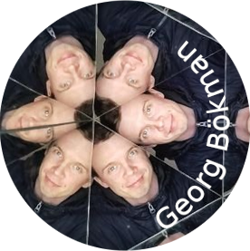

Welcome to Georg Bökman's webpage, last updated 2026-10-16.
I'm a computer scientist focusing on computer vision and machine learning. Recently, I've enjoyed thinking about how symmetries in data relate to symmetries in algorithms and I've applied ideas from geometric/equivariant deep learning to computer vision tasks such as image matching.
Currently, I am a postdoc in the Amsterdam Machine Learning Lab working with Erik Bekkers.
I completed my PhD at Chalmers in 2024 under the supervision of Fredrik Kahl, and co-advisors Michael Felsberg and Axel Flinth.
Selected publications
Quick ViTs: Speeding up vision transformers through equivariance
ECCV 2026,
arXiv:2505.15441
Identifiable equivariant networks are layerwise equivariant
ICML 2026,
arXiv:2601.21645
Platonic transformers: A solid choice for equivariance
ICML 2026,
arXiv:2510.03511
Flopping for FLOPs: Leveraging equivariance for computational efficiency
ICML 2025 (Spotlight),
arXiv:2502.05169
Steerers: A framework for rotation equivariant keypoint descriptors
CVPR 2024 (Oral),
arXiv:2312.02152